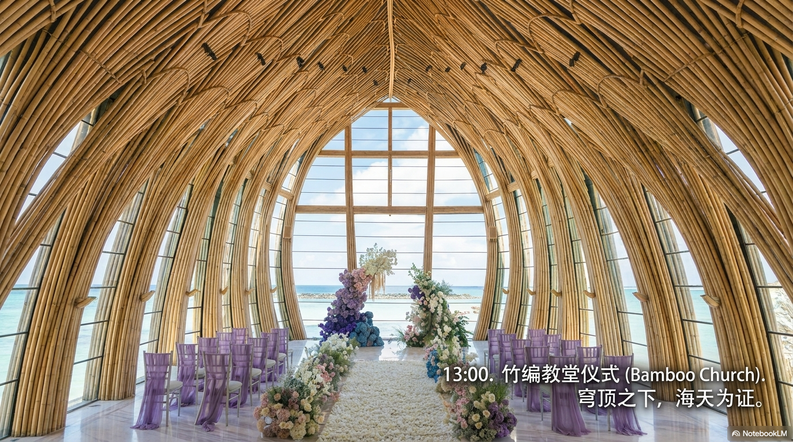
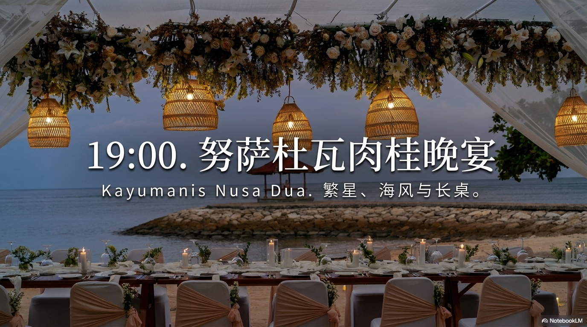

Jaydon & Sissi
张钰祺 & 魏廖诗雅
2026年4月27日
印度尼西亚 · 巴厘岛
星期一 · Monday
晨间准备
婚礼仪式
晚宴
婚礼日程
日期
2026年4月27日
仪式时间
13:00
仪式地点
凯宾斯基大教堂
晚宴地点
努沙杜瓦肉桂
仪式开始
13:00
2026年4月27日 · 星期一
凯宾斯基大教堂 · Bali
全天流程
晨间准备
7:55
化妆师抵达新人房间
凯宾斯基酒店
8:00 — 10:00
新娘化妆 · 第一套：晨袍
10:00
摄像摄影团队抵达
星辰摄影 / 摄像（10小时服务）
10:00 — 10:30
新郎化妆
10:30 — 11:00
新娘补妆换中式礼服
第二套：中式礼服 · 新娘美拍
11:00 — 11:30
接亲仪式
5个游戏环节 · 伴郎团闯关
接亲游戏
11:30 — 12:00
奉茶仪式
敬茶仪式 + 与家人合照
双方父母
12:00 — 12:30
新人补妆 + 更换主纱
第三套：主纱
12:30 — 12:50
婚礼场地拍摄
First Look · 婚礼小细节
婚礼仪式

12:40
宾客入场
亲友抵达 · 督导讲解礼仪流程
13:00 — 13:30
婚礼仪式
新郎入场 → 新娘入场 → 牧师发言 → 交换戒指 → 亲吻签名 → 花瓣雨
13:30 — 14:00
婚礼仪式结束 · 大合影
撒花瓣祝福
下午
14:00 — 15:00
午餐 & 休息
新人 / 拍摄团队 / 化妆师
15:00 — 15:30
酒店主纱继续拍摄
大堂区域 / 楼梯
15:30 — 16:00
新娘补妆换外拍轻纱
第四套：外拍轻纱
16:00 — 16:30
出发前往外拍场地
Balangan 悬崖（路程约30分钟）
外拍地点
16:30 — 17:30
Balangan 悬崖外景拍摄
悬崖 / 沙滩取景
17:30 — 18:00
新人补妆换晚宴礼服
第五套：晚宴礼服
18:00
化妆师结束服务
晚宴

18:15
宾客前往晚宴场地
努沙杜瓦肉桂（14座车接送）
18:50 — 18:55
宾客准备迎接新人
19:00
新人入场
仙女棒迎接 · 新人致辞
19:00 — 19:10
乐队演奏（第一趴）
三人乐队演奏
19:10
晚宴开始 · 倒香槟塔 · 切蛋糕
Bauchet Origine Brut 香槟 · 冷焰火6柱
19:25
火舞表演
三人火舞 · 8-10分钟
19:35
First Dance
新人第一支舞 · 5-10分钟
19:45
游戏环节
5个互动游戏（详见下方）
20:00
乐队演奏（第二趴）
摄影 / 摄像团队服务结束
20:30
与亲友干杯聊天
21:45
亲友返回酒店休息
新人乘坐专车回四季酒店
22:00
晚宴结束
督导团队结束
晚宴游戏
酒满则溢
准备一个大杯子，宾客轮流往里倒酒，如果倒出来就得把整杯喝掉，一共玩三轮。
举牌凑数游戏
道具：超大扑克牌（16倍）
全体成员一起转圈圈，新人随机说一个数字，宾客们抱团凑出对应数字。没组成符合要求的人数均被淘汰。
第一局：
凑成四个一样的数字
第二局：
凑成同花顺
第三局：
相加总和等于指定数字
一站到底
主持人提问新郎新娘的问题，宾客站在新郎或新娘背后选择答案，站错将被淘汰，站到最后的人将获得盲盒大奖。
捂眼转圈弹瓶盖
右手捂着左眼，原地转五圈，径直走到放着瓶盖的瓶子前，左手弹走瓶盖，瓶子不倒则取胜。输了喝一杯酒，赢了拿走礼物。
盲盒喝酒拍卖
由主持人进行奖品拍卖，起价半杯红酒或苦瓜汁原液，无封顶。每次竞拍红酒不得少于半杯，饮料不得少于一杯，最高价可得一份礼物并现场喝完竞拍饮品。